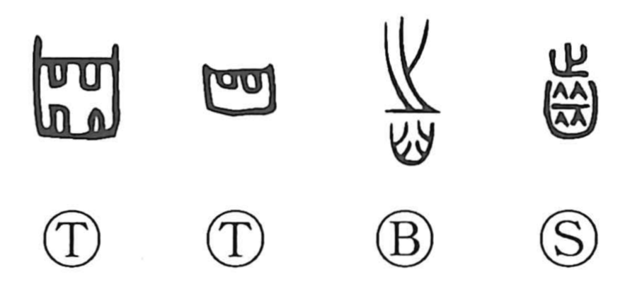

歯

Kun: ha, yowai | On: shi
tooth ・ age
Explanation
The character now written 歯 goes back to the older form 齒. In the earliest oracle-bone inscriptions it is a simple pictograph: the shape of teeth, with no phonetic element. Later, 止 was added as a phonetic indicator for the on reading shi, while the lower portion continued to depict the teeth themselves. Already in the Yin period a derivative, 齲 “mushiba” (dental caries), was formed by inserting the “insect” sign between the teeth, and divinations even asked, “Will the teeth become ill?” Because the age of animals can be judged by their teeth, the character also came to mean “age,” as in 年歯, and in court usage 歯杖, the “age cane,” was the cane presented by the emperor to those of seventy years.